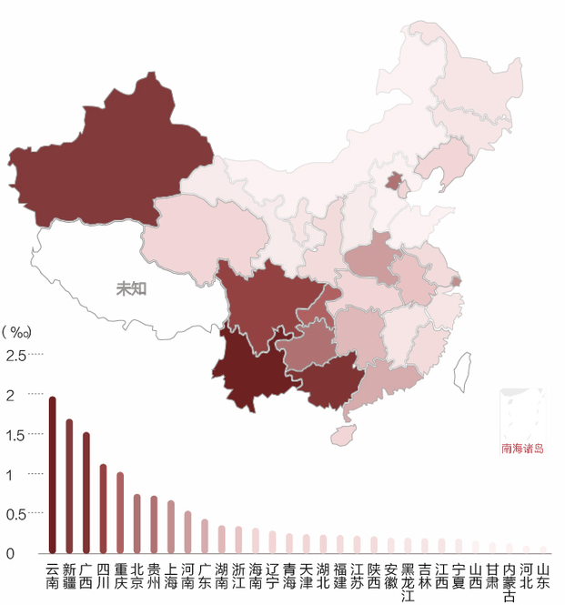
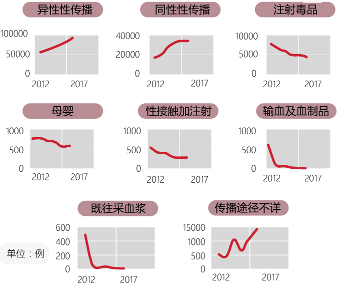

了解艾滋病
从1981年开始，美国疾病控制中心（CDC）不断收到有关卡波济肉瘤（kaposi’ sarcoma）的病例报告，由于新发现的病例与以往的有所不同，死亡率高，而且发病率呈快速上升趋势，引起了CDC的高度重视，1982年9月，CDC正式提出了获得性免疫缺陷综合征(acquired immunodeficiency syndrome, AIDS或艾滋病)的概念，随后的调查研究证明这是一种新的传染病。1983年，法国巴斯德研究所的Montagnier等首先从一例淋巴瘤患者的淋巴结中分离出一种病毒，被称为淋巴结病相关病毒（lymphadenopathy associated virus, LAV）,1984年初，美国国立卫生研究院国立癌症研究所的Gallo 等从艾滋病患者的外周血单核细胞（PBMC）中分离到称为人嗜T淋巴细胞病毒Ⅲ型（human T-cell lymphotropic virus type Ⅲ, HTLV-Ⅲ）的病毒。同年，美国加州大学的Levy等也从艾滋病患者的外周血淋巴细胞中分离出一种病毒，称艾滋病相关病毒（AIDS related virus, ARV）。1986年，国际病毒分类委员会（International Committee on Taxonomy of Viruses, ICTV）将LAV/HTLV-Ⅲ/ARV统一命名为人免疫缺陷病毒（human immunodeficiency virus, HIV），又称艾滋病毒。艾滋病病人和无症状HIV携带者为主要传染源。


认识
使用共焦显微镜观察发现，含有HIV-1 Tat蛋白的小鼠大脑中的多巴胺产生区的神经元是活的，而正常产生多巴胺的小鼠无法产生如此多的多巴胺。同时发现，一些神经元中不再能够检测到产生多巴胺所必需的酶，酪氨酸羟化酶。科研人员认为，小神经胶质细胞分泌的HIV-1 Tat蛋白能够进入多巴胺神经元并降低其活性，从而减少多巴胺的产生，致使与大脑中其他细胞交流的能力降低。脑部黑质区域多巴胺水平降低是帕金森症的一个特征，并使患者容易患抑郁症和药物成瘾。
20多年来，强大的抗逆转录病毒药物组合已经被用于治疗艾滋病病毒感染者，而且这些药物已经显著提高了HIV感染者的预期寿命，从36岁提高到49岁。虽然联合抗逆转录病毒疗法(CART)可以将病毒载量降低到血液中无法检测到的水平，但HIV可以隐藏在中枢神经系统，并被整合到小神经胶质细胞（大脑的免疫细胞）基因组。
免疫系统的细胞负责对抗入侵的微生物和抑制恶性癌症，而导致艾滋病的HIV病毒长期以来被认为是攻击和破坏免疫系统的克星。最近，研究人员发现HIV病毒不仅针对血液中的免疫细胞，而且针对脑部和脊髓，甚至可以在人体内潜伏很多年。弗罗里达大学Habibeh Khoshbouei教授认为，大脑中HIV感染的一个后果是与年龄有关的疾病会更早发生，包括神经疾病如阿尔茨海默氏症和帕金森病，同时对毒品的易感性增加。